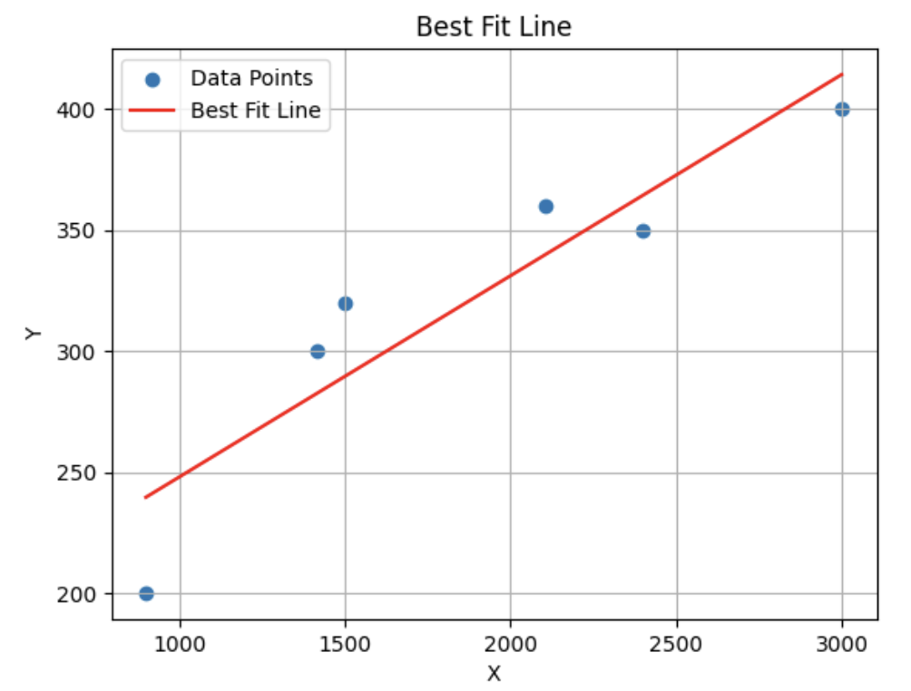
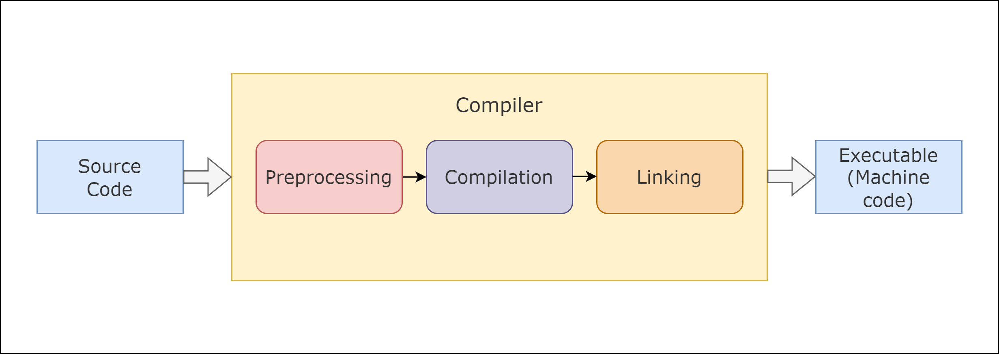

Linear regression is a fundamental statistical method used for modeling the relationship between a dependent variable and one or more independent variables. It's called "linear" because it assumes that there is a linear relationship between the variables, meaning that a change in one variable is associated with a proportional change in the other./p>
Logistic regression is a process of modeling the probability of a discrete outcome given an input variable

Explore how Gaussian Discriminant Analysis (GDA) and Naive Bayes classifiers leverage probability models for classification, with insights on their assumptions, advantages, and applications.

The process of transforming source code into an executable
program involves several distinct phases: configure-time, compile-time, link-time, and run-time.
Each phase plays a crucial role in ensuring that your code is correctly processed, optimized, and
executed. Understanding these phases will not only help you troubleshoot build issues but also make
informed decisions about optimizing and configuring your projects.

In this blog, I’ll break down core concepts—covering Amdahl’s Law, ghost cells, stencil algorithms, MPI, and more—keeping it fun and relatable!